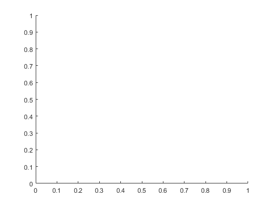
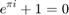
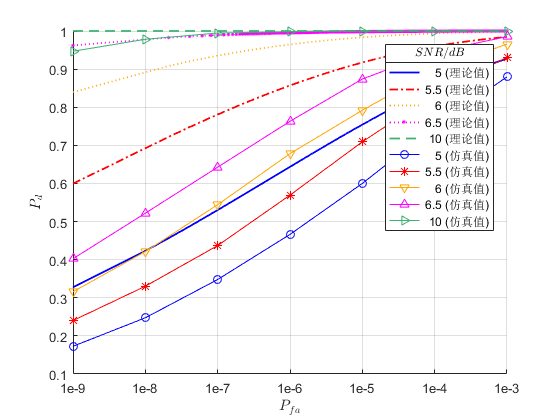

clear, clc; close all; figure; hold on; r1 = 44; % 样本数，采样率为 22M Pfa = linspace(1e-9, 1e-3, 100000);

SNR = 5; % 信噪比，dB形式 SNR = power(10, SNR / 10); % 信噪比，原始比例形式 beta1 = sqrt(r1*(4-pi)/pi) * norminv(1-Pfa, 0, 1) + r1; Pd = 1 - normcdf(beta1 .* sqrt(pi/(2*r1)) - sqrt(r1) .* sqrt(SNR)); plot(log10(Pfa), Pd, '-', 'color', [0 0 1], 'linewidth', 1.3); Pfa = linspace(1e-9, 1e-3, 50000); SNR = 5.5; % 信噪比，dB形式 SNR = power(10, SNR / 10); % 信噪比，原始比例形式 beta1 = sqrt(r1*(4-pi)/pi) * norminv(1-Pfa, 0, 1) + r1; Pd = 1 - normcdf(beta1 .* sqrt(pi/(2*r1)) - sqrt(r1) .* sqrt(SNR)); plot(log10(Pfa), Pd, '-.', 'color', [1 0 0], 'linewidth', 1.3); SNR = 6; % 信噪比，dB形式 SNR = power(10, SNR / 10); % 信噪比，原始比例形式 beta1 = sqrt(r1*(4-pi)/pi) * norminv(1-Pfa, 0, 1) + r1; Pd = 1 - normcdf(beta1 .* sqrt(pi/(2*r1)) - sqrt(r1) .* sqrt(SNR)); plot(log10(Pfa), Pd, ':', 'color', [1 0.65 0], 'linewidth', 1.3); SNR = 6.5; % 信噪比，dB形式 SNR = power(10, SNR / 10); % 信噪比，原始比例形式 beta1 = sqrt(r1*(4-pi)/pi) * norminv(1-Pfa, 0, 1) + r1; Pd = 1 - normcdf(beta1 .* sqrt(pi/(2*r1)) - sqrt(r1) .* sqrt(SNR)); plot(log10(Pfa), Pd, ':.', 'color', [1 0 1], 'linewidth', 1.3); SNR = 10; % 信噪比，dB形式 SNR = power(10, SNR / 10); % 信噪比，原始比例形式 beta1 = sqrt(r1*(4-pi)/pi) * norminv(1-Pfa, 0, 1) + r1; Pd = 1 - normcdf(beta1 .* sqrt(pi/(2*r1)) - sqrt(r1) .* sqrt(SNR)); plot(log10(Pfa), Pd, '--', 'color', [60/255 179/255 113/255], 'linewidth', 1.3); % 以下是仿真的结果 logPfa = log10([1e-9 1e-8 1e-7 1e-6 1e-5 1e-4 1e-3]); % SNR = 5dB; Pd = [0.17275 0.2475 0.34795 0.4663 0.6 0.74935 0.87965]; plot(logPfa, Pd, '-o', 'color', [0 0 1]); % SNR = 5.5dB; Pd = [0.2402 0.33035 0.437 0.5694 0.70925 0.83525 0.931]; plot(logPfa, Pd, '-*', 'color', [1 0 0]); % SNR = 6dB; Pd = [0.3159 0.4212 0.54425 0.67825 0.792 0.898 0.9657]; plot(logPfa, Pd, '-v', 'color', [1 0.65 0]); % SNR = 6.5dB; Pd = [0.4025 0.5219 0.64275 0.7631 0.874 0.9453 0.9852]; plot(logPfa, Pd, '-^', 'color', [1 0 1]); % SNR = 10dB; Pd = [0.94685 0.9783 0.99475 0.99835 0.9998 1 1]; plot(logPfa, Pd, '->', 'color', [60/255 179/255 113/255]); leg = legend(' 5 (理论值)', ' 5.5 (理论值)', ' 6 (理论值)', ' 6.5 (理论值)', ' 10 (理论值)', ... ' 5 (仿真值)', ' 5.5 (仿真值)', ' 6 (仿真值)', ' 6.5 (仿真值)', ' 10 (仿真值)'); title(leg, '$SNR/dB$', 'interpreter', 'latex', 'fontname', 'fixedwidth'); xlabel('$P_{fa}$', 'interpreter', 'latex'); ylabel('$P_{d}$', 'interpreter', 'latex'); set(gca, 'xtick', [-9 -8 -7 -6 -5 -4 -3], 'xticklabel', {'1e-9', '1e-8', '1e-7', '1e-6', '1e-5', '1e-4', '1e-3'}); grid on;